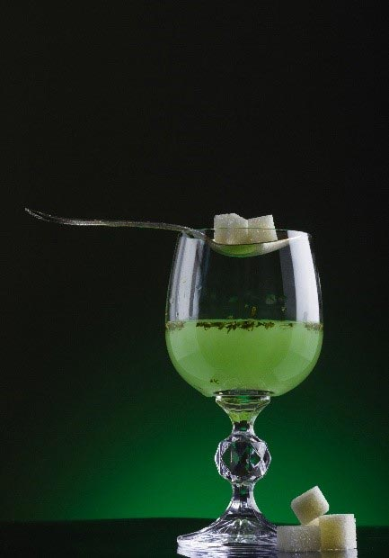

Kemi A
Digital
Gammel ordning
kl. 09.00-14.00
Vejledning
Prøven
Opgavesættet består af 4 opgaver med i alt 15 delopgaver.
Alle hjælpemidler er tilladt.
Følgende hjælpemidler forudsættes:
DATABOG fysik kemi (F&K Forlaget), 11. udgave (2007) eller senere udgave.
Opgavebesvarelsen
Din opgavebesvarelse skal afleveres i et samlet dokument, gemt i pdf-format.
Bedømmelse
Ved bedømmelsen af din besvarelse lægges vægt på, at du er i stand til at anvende din kemiske viden på nye problemstillinger, og at din besvarelse er ledsaget af
| - | forklarende tekst | |
| - | reaktionsskemaer | |
| - | beregninger | |
| - | figurer | |
| - | kemiske formler |
Der gives én karakter på baggrund af en helhedsbedømmelse.
Opgave 1: Kroneethere
|
I 1987 blev Nobelprisen i kemi givet til en kemiker, der beskrev forskellige metoder til fremstilling af kroneethere. Kroneethere er cycliske forbindelser, som kan opløse ionforbindelser i upolære opløsningsmidler. I dag spiller de en vigtig rolle i reaktioner, der katalyseres af metalioner.
Kroneethere er forholdsvis upolære, men når oxygenatomerne i en kroneether er orienteret ind mod midten af molekylet, kan de ledige elektronpar på oxygenatomerne fastholde en metalion. Ionforbindelsens negative ion følger med i opløsning på grund af den elektriske tiltrækning til metalionen. |

|
Kaliumpermanganat er uopløseligt i benzen, men ved tilsætning af kroneetheren A til blandingen bindes kaliumionen i kroneetherens hulrum, som vist i reaktionen i figur 1.1. Opløsningen bliver violet på grund af medfølgende permanganat.
Figur 1.1
I et laboratorium skal den molare absorptionskoefficient for permanganat i en benzenopløsning bestemmes.
Der fremstilles en stamopløsning ved at overføre 0,482 g kaliumpermanganat til en 100 mL målekolbe. Benzen med opløst A tilsættes, og der omrystes indtil alt kaliumpermanganat er opløst. Der fyldes op til mærket med benzen.
| a) | Beregn den formelle stofmængdekoncentration af kaliumpermanganat i stamopløsningen. |
1,00 mL af stamopløsningen overføres til en 100 mL målekolbe. Der fyldes op til stregen med benzen. Med et spektrofotometer optages et absorptionsspektrum af den fortyndede opløsning. Kuvettebredden er 1,00 cm. Absorptionsspektret er vist i figur 1.2.
Figur 1.2
| b) | Bestem den molare absorptionskoefficient, ελ, for MnO4− i benzenopløsningen ved 525 nm. |
Opgave 2: Novichok - en nervegift
|
Novichok er en serie nervegifte, som blev udviklet i Rusland i årene 1971-1993. De angives at være nogle af de mest giftige kemiske våben, der er produceret. Stofferne menes ikke at have været brugt i krig, men undersøgelser tyder på, at den tidligere russiske dobbeltagent Sergei Skripal og hans datter blev forgiftet med Novichok i marts 2018.
Novichok virker ved at blokere et enzym i nervesystemet. Dette enzym katalyserer omdannelsen af acetylcholin, som er et vigtigt signalstof. Reaktionen er vist i figur 2.1. |

|
Figur 2.1
| a) | Angiv reaktionstypen for reaktionen i figur 2.1. Begrund i forhold til reaktionsskemaet. |
Analyser fra fem forskellige laboratorier siges at have påvist, at dobbeltagenten og hans datter blev forgiftet med stoffet A-234. Strukturen er vist i figur 2.2, hvor X er en atomgruppe.
A-234
M = 269,99 g/mol
Figur 2.2
M = 269,99 g/mol
Figur 2.2
En elementaranalyse viser, at stoffet har følgende sammensætning angivet som masseprocenter i tabel 2.1.
| b) | Bestem molekylformlen for A-234. |
Signalstoffet acetylcholin i nervesystemet stimulerer muskelsammentrækninger.
Enzymet acetylcholinesterase katalyserer omdannelsen af acetylcholin ved reaktionen i figur 2.1.
Herved undgås det, at koncentrationen af acetylcholin bliver for høj.
Ved forgiftning med Novichok blokeres enzymet acetylcholinesterase. Derved sker der ophobning af acetylcholin i nervesystemet, og det fører til overstimulering. Offeret får så voldsomme kramper, at hjerte og luftveje ikke længere kan fungere normalt.
Den enzymatiske omdannelse af acetylcholin i nervesystemet er blevet undersøgt. Der blev fremstillet en række opløsninger med forskellige koncentrationer af acetylcholin. Alle opløsninger indeholder enzymet acetylcholinesterase i samme koncentration.
Initialhastigheden v for omdannelse af acetylcholin bestemmes i de forskellige opløsninger med forskellig koncentration af acetylcholin. Resultaterne er vist i figur 2.3 og gemt i datafilen.
Excel-fil
Figur 2.3
| c) | Vis, ved brug af data fra excel-filen at omdannelsen af acetylcholin med god tilnærmelse er en 1. ordensreaktion med hensyn til acetylcholin for koncentrationer under 0,06 mm.
Bestem halveringstiden for omdannelse af acetylcholin for koncentrationer af acetylcholin under 0,06 mm. |
Sammenhængen mellem koncentrationen af acetylcholin og hastigheden for omdannelsen af acetylcholin kan beskrives ved nedenstående hastighedsudtryk
|
v = 0,03221 µm·min−1 · [acetylcholin][acetylcholin] + 0,24 mm
|
| d) | Argumenter for, at hastighedsudtrykket med god tilnærmelse svarer til en 0. ordens reaktion med hensyn til acetylcholin for koncentrationer af acetylcholin over 25 mm.
Bestem hastighedskonstanten for omdannelsen af acetylcholin for koncentrationer af acetylcholin over 25 mm. |
Opgave 3: Absint
|
Absint er et alkoholdestillat, som tilsættes romersk malurt. Stofferne fra urterne trækkes ud i destillatet. Chlorofyl fra bladene giver den færdige absint en grøn farve, som har givet absint kælenavnet ”den grønne fe”.
I starten af 1900-tallet blev absint forbudt i de fleste europæiske lande. Drikken indeholder stoffet tujon, som blev tilskrevet hallucinerende virkning. Det har man dog ikke kunnet dokumentere videnskabeligt, og i dag markedsføres absint som en almindelig alkoholisk drik. tujon
Figur 3.1 |
 |
Figur 3.1.mrv Figur 3.1.sk2
| a) | Angiv en strukturisomer til tujon, som er en tertiær alkohol. |
I figur 3.2 ses strukturformler for et udvalg af typiske stoffer i absint.
Figur 3.2
Figur 3.2.mrv Figur 3.2.sk2
De fire stoffer er fordelt på fire reagensglas, 1, 2, 3 og 4, med et stof i hvert glas. Der gennemføres to kemiske tests på stofferne, som vist i filmen herunder.
Kemiske tests på stofferne
| b) | Argumenter for, hvilke af reagensglassene der kan tilordnes stofferne alene på baggrund af de kemiske tests.
Gør rede for, hvordan IR-spektroskopi kan bidrage til tilordningen af de stoffer, der ikke kan tilordnes ud fra de kemiske tests vist i filmen. Inddrag kun absorptionsbånd over 1500 cm−1. |
I 2008 vedtog EU, at absint maksimalt må indeholde 35 mg tujon pr L.
Indholdet af tujon i absint kan bestemmes ved gaschromatografi, GC. Princippet i GC er, at en stofblanding føres gennem en kolonne af en bæregas. Kolonnen er således den stationære fase og gassen er den mobile fase.
Molekylerne i blandingen kommer ud af kolonnen til forskellige tider kaldet retentionstider. Der tegnes et chromatogram, hvor retentionstiden er vist på 1. aksen. For hver top i chromatogrammet angives et arealtal.
Tujon findes i to former, α-tujon og β-tujon. Ved en gaschromatografisk analyse af absint, har de to former af tujon forskellige retentionstider, som vist i chromatogrammet på figur 3.3.
retentionstid/min
Figur 3.3
For at bestemme koncentrationen af α-tujon i absint fremstilles en række standardopløsninger med forskellige koncentrationer af α-tujon. Standardopløsningerne analyseres ved GC. Standardkurven i figur 3.4 viser arealtallene som funktion af koncentrationen af α-tujon.
Figur 3.4
Ved en tilsvarende analyse har man bestemt indholdet af β-tujon i absinten til 1,95 mg/L.
| c) | Bestem det samlede indhold af tujon i absinten, udtrykt i mg/L. Kommenter resultatet i forhold til EU-lovgivningen. |
I figur 3.5 ses et 1H-NMR-spektrum for et aromastof, D, der er påvist i absint. D har molekylformlen C9H18O2. Spektrometerfrekvensen er 300 MHz.
Figur 3.5
| d) | Bestem strukturen af stof D. Argumenter ud fra integralkurver, kemiske skift og koblingsmønstre. |
Hvis der tilsættes anis til alkoholdestillatet under fremstillingen af absint, får drikken en karakteristisk smag, som skyldes aromastoffet anethol.
anethol
Figur 3.6
Figur 3.6
Før absint drikkes tilsættes vand, som vist i filmen nedenfor.
Absint og vand
De to typer absint har samme koncentration af ethanol, svarende til en volumenprocent på 75.
| e) | Forklar forskellen i iagttagelser i de to glas ved tilsætning af vand.
Argumenter ud fra opløsningsmidlerne i drikken og strukturen af anethol. |
Opgave 4: Blåsyre
|
Under 2. verdenskrig blev blåsyre brugt i koncentrationslejrenes gaskamre under navnet Zyklon-B.
Blåsyre er også blevet knyttet til dannelsen af liv i universet, da det kan indgå i dannelsen af aminosyrer ud fra små molekyler. I dag anvendes store mængder blåsyre til fremstilling af polymerer og lægemidler. Blåsyre har det systematiske navn hydrogencyanid. Det er en farveløs syre, men fik navnet blåsyre, da det oprindeligt blev isoleret fra pigmentet berlinerblåt. |

Kirsebærkerner indeholder et stof, der langsomt frigør blåsyre.
|
| a) | Beregn pH i en 0,125 m vandig opløsning af hydrogencyanid ved 25 °C. |
Blåsyre kan udvindes af frugter med kerner, fx kirsebær, abrikoser og æbler og fra bitre mandler, men det fremstilles industrielt ud fra carbonhydrider og ammoniak.
Nedenfor ses reaktionsskemaet for Degussa-reaktionen.
| CH4(g) + NH3(g) → HCN(g) + 3 H2(g) | (1) |
| b) | Beregn ΔS° for reaktionen. Kommenter resultatet i forhold til reaktionsskemaet. |
∆G° for reaktionen er bestemt ved forskellige temperaturer i området omkring 1000 °C. Resultaterne fremgår af nedenstående datafil.
Excel-fil
Reaktionen gennemføres i en lukket beholder.
| c) | Bestem ligevægtskonstanten ved 1000 °C. Gør rede for, om temperaturen skal sænkes eller hæves for at øge udbyttet af hydrogencyanid. |
En lukket tom beholder tilføres methan og ammoniak, så partialtrykkene fra start er 0,35 bar for methan og 0,65 bar for ammoniak. Ligevægten indstilles ved 1000 °C.
| d) | Beregn partialtrykket for hydrogencyanid, når ligevægten er indstillet. Beregn det samlede tryk i beholderen efter ligevægten er indstillet. |
Filer til opgaverne
| Filnavn | Opgave | Figur | Beskrivelse |
| 181499_opg_2c_excel.xlsx | 2 | - | Excel datafil |
| 181499_figur3_1.mrv | 3 | 3.1 | MarvinSketch fil med strukturformel |
| 181499_figur3_1.sk2 | 3 | 3.1 | ChemSketch fil med strukturformel |
| 181499_figur3_2.mrv | 3 | 3.2 | MarvinSketch fil med strukturformel |
| 181499_figur3_2.sk2 | 3 | 3.2 | ChemSketch fil med strukturformel |
| 181499_opg_4c_excel.xlsx | 4 | - | Excel datafil |
Klik her for at downloade alle filer.
Kilder til billeder
Opgave 1
Opgavekommissionen
Opgave 2
Colourbox.com
Opgave 3
Colourbox.com
Opgave 4
Colourbox.com